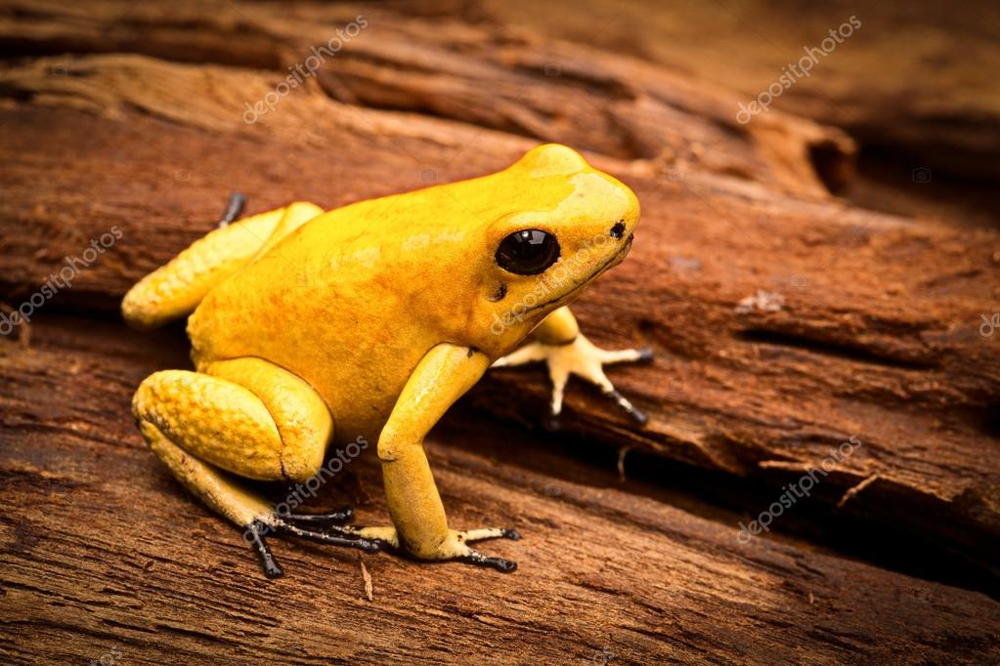
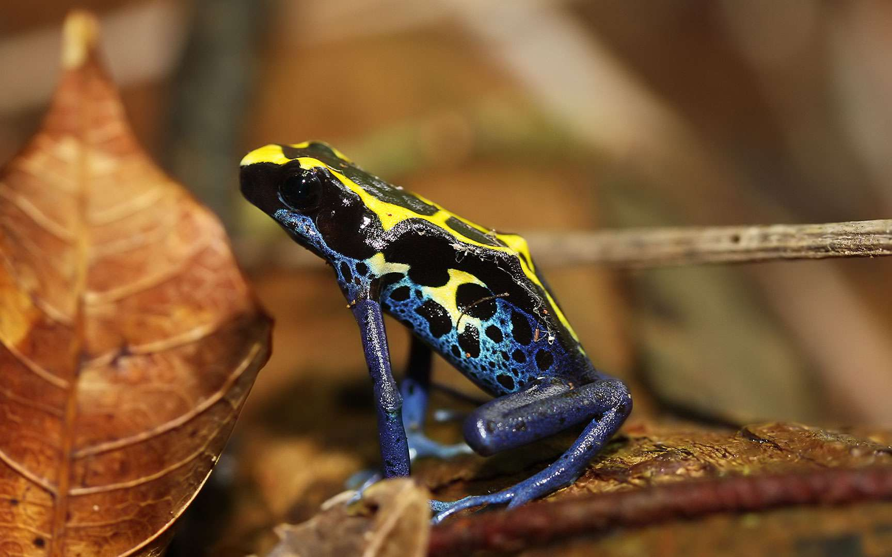
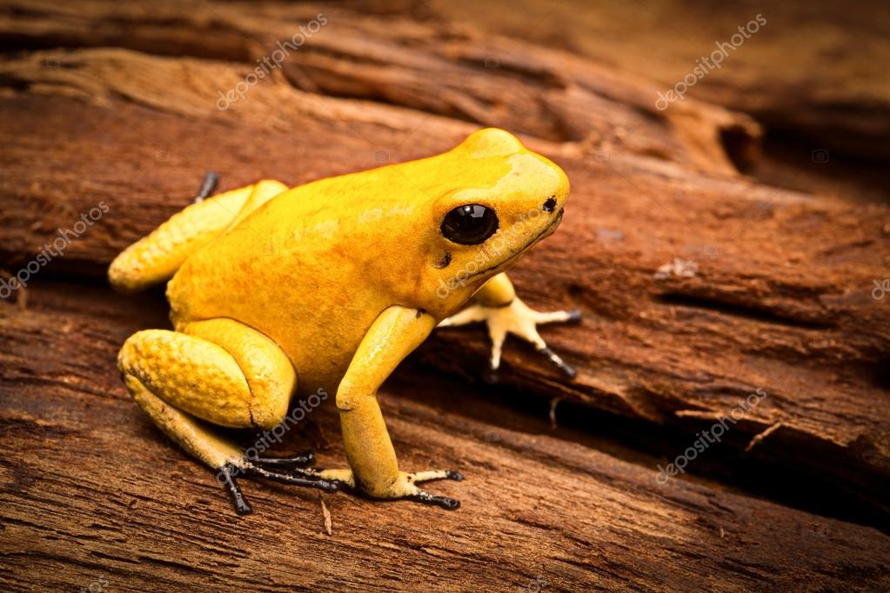
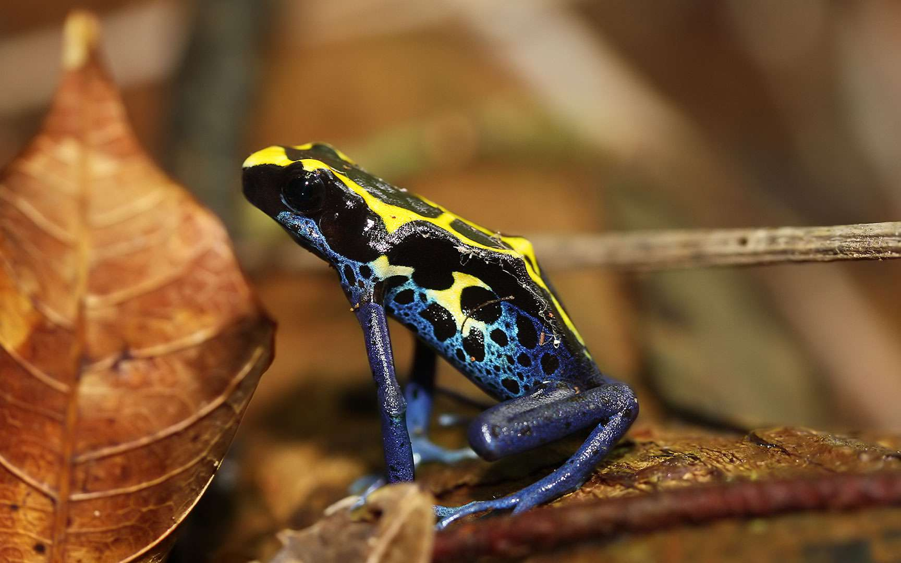

Les grenouilles venimeuses
Les grenouilles sont des amphibiens qui possèdent quatre pattes et qui se retrouvent dans des
territoires très différents que ce soit par rapport au climat (tempéré, humide, sec…) ou au
milieu naturel (sur la terre ferme, dans l’eau). Si certaines espèces communes en Europe ne
représentent aucun danger pour les humains, dans certains pays du monde, les grenouilles
possèdent des caractéristiques très toxiques.
Comment leur corps abrite-t-il le poison?
En séquençant l'ADN d'espèces de grenouilles venimeuses ayant recours à l'épibatidine, Rebecca Tarvin et ses collègues ont découvert que les récepteurs d'acétylcholine des grenouilles étaient légèrement déformés ; des résultats que l'équipe a publié récemment dans la revue Science.
D'un point de vue génétique, cette modification devait être subtile. L'acétylcholine et l'épibatidine se lient au même endroit du récepteur nerveux : si les mutations modifiaient la forme du récepteur de façon trop radicale, l'acétylcholine ne serait pas en mesure d'exécuter ses tâches quotidiennes essentielles.
D'autres ajustements structurels le long du récepteur ont permis de contourner le problème. L'épibatidine est incapable de « reconnaître » le récepteur de l'acétylcholine des grenouilles venimeuses ; or, l'acétylcholine le peut, sauvant ainsi les grenouilles des effets de leur infusion toxique.
Par ailleurs, il semblerait que les grenouilles se sont heurtées à cette résistance à trois reprises lors de leur évolution, témoignage de l'utilité de cette mutation.
« C'est magnifique. Il n'existe qu'une poignée d'exemples comme l'étude menée par Rebecca Tarvin », s'enthousiasme Zoltan Takacs, herpétologiste, spécialiste des toxines et explorateur pour National Geographic.
« Quel que soit ce que vous découvrez, il s'agit d'une percée très rare sur le fonctionnement de l'évolution et de la neurobiologie. »


 


